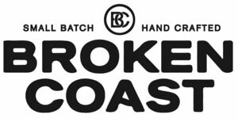

Trade Mark Journal No.2025/037 12 September 2025
WO0000001862374 (3,5,9,16,21,25,29,30,31,32,34,35,39,41,42,44,45)
Office of origin: Canada
Date of International Registration:24 March 2025
Date of designation in the UK:
24 March 2025

International priority date claimed: 25 September 2024
(Canada)
(2351700)
- Class 3
- Bath additives; bath herbs; bath oils; bath oils for cosmetic purposes; beauty care cosmetics; beauty creams for body care; beauty gels; beauty lotions; body and beauty care cosmetics; body creams; body oils; cosmetic creams; cosmetic oils; cosmetics and make-up; face and body lotions; face and body milk; face lotion; hair care preparations; hair styling preparations; hand cream; hand lotions; lip care preparations; lip conditioners; lip glosses; liquid soaps; massage creams; massage oils; non-medicated bubble bath preparations; non-medicated preparations for the care of hair; non-medicated preparations for the care of skin; non-medicated preparations for the care of the scalp; non-medicated skin care preparations; oils for toiletry purposes; skin care preparations; skin creams; skin emollients; skin lotions; skin soap; soaps for body care; soaps for personal use.
- Class 5
- Cannabis and marijuana for medicinal purposes, for the relief of pain, for relaxation, for reducing stress and fatigue, for mood enhancement, for maintaining general health and well-being, for relieving anxiety, for relieving depression, as a sleep aid and for management of opioid addiction and relief of epilepsy; cannabis related product, namely, oils for medicinal use for the relief of pain, for relaxation, for reducing stress and fatigue, for mood enhancement, for maintaining general health and well-being, for relieving anxiety, for relieving depression, as a sleep aid and for management of opioid addiction and relief of epilepsy; oils derived from cannabis for medicinal use for the relief of pain, for relaxation, for reducing stress and fatigue, for mood enhancement, for maintaining general health and well-being, for relieving anxiety, for relieving depression, as a sleep aid and for management of opioid addiction and relief of epilepsy; cannabis related products, namely oils, salves, concentrated pastes, tinctures, tablets and capsules, each containing cannabis for medicinal purposes, for the relief of pain, for relaxation, for reducing stress and fatigue, for mood enhancement, for maintaining general health and well-being, for relieving anxiety, for relieving depression, as a sleep aid and for management of opioid addiction and relief of epilepsy; oils, salves, concentrated pastes, tinctures, tablets and capsules each containing resins and oils derived from cannabis for medicinal purposes, for the relief of pain, for relaxation, for reducing stress and fatigue, for mood enhancement, for maintaining general health and well-being, for relieving anxiety, for relieving depression, as a sleep aid and for management of opioid addiction and relief of epilepsy; nutraceuticals for medicinal purposes for the relief of pain, for relaxation, for reducing stress and fatigue, for mood enhancement, for maintaining general health and well-being, for relieving anxiety, for relieving depression, as a sleep aid and for management of opioid addiction and relief of epilepsy; nutraceuticals for medicinal purposes containing cannabis for the relief of pain, for relaxation, for reducing stress and fatigue, for mood enhancement, for maintaining general health and well-being, for relieving anxiety, for relieving depression, as a sleep aid and for management of opioid addiction and relief of epilepsy; nutraceuticals for medicinal purposes containing derivatives of cannabis, namely resins and oils for the relief of pain, for relaxation, for reducing stress and fatigue, for mood enhancement, for maintaining general health and well-being, for relieving anxiety, for relieving depression, as a sleep aid and for management of opioid addiction and relief of epilepsy; topical skin creams, bar and liquid soaps, bath additives, bath herbs, bath oils, body creams, body oils, face and body lotions, face and body milk, face lotion, and skin care preparations each containing derivatives of cannabis, for the relief of pain, for relaxation, for reducing stress and fatigue, for mood enhancement, for maintaining general health and well-being, for relieving anxiety, for relieving depression, as a sleep aid and for management of opioid addiction and relief of epilepsy; personal sexual lubricants; transdermal patches containing cannabis for the relief of pain, for relaxation, for reducing stress and fatigue, for mood enhancement, for maintaining general health and well-being, for relieving anxiety, for relieving depression, as a sleep aid and for management of opioid addiction and relief of epilepsy; oral sprays containing cannabis for medicinal use for the relief of pain, for relaxation, for reducing stress and fatigue, for mood enhancement, for maintaining general health and well-being, for relieving anxiety, for relieving depression, as a sleep aid and for management of opioid addiction and relief of epilepsy.
- Class 9
- Electronic publications, namely, newsletters, brochures, reports and guides in the field of cannabis.
- Class 16
- Printed publications, namely, newsletters, brochures, reports and guides in the field of cannabis.
- Class 21
- Jars.
- Class 25
- T-shirts; athletic apparel; baseball caps; beachwear; caps; casual wear; coveralls; flip-flops; gloves; golf caps; golf shirts; hats; headbands; long-sleeved t-shirts; mittens; paper hats; sandals; shirts; sweatshirts; toques.
- Class 29
- Food products containing cannabis, cannabis resins and cannabis oils, namely butter; oils and resins derived from cannabis, for use as comestibles; cannabis related product, namely, oils for use as comestibles; oils derived from cannabis for use as comestibles.
- Class 30
- Food products containing cannabis, cannabis resins and cannabis oils, namely chocolates, cookies, brownies, candy and food energy bars; tea; cannabis related products, namely teas containing cannabis, and teas containing derivatives of cannabis namely resins and oils.
- Class 31
- Live cannabis plants; live marijuana plants; cannabis seeds.
- Class 32
- Smoothies, fruit beverages and fruit juices, carbonated soft drinks, and energy drinks each containing derivatives of cannabis; smoothies, fruit beverages and fruit juices, carbonated soft drinks, and energy drinks each containing resins and oils derived from cannabis.
- Class 34
- Dried marijuana, dried cannabis; derivatives of cannabis, namely resins and oils, for oral vaporizers for smoking' smokers' articles, namely, smoking pipes, pouches for use with marijuana and cannabis, lighters for smokers, grinders for use with cannabis and marijuana, oral vaporizers for smokers.
- Class 35
- Providing retail, wholesale and distribution services connected with the sale of marijuana and cannabis, cannabis related products, derivatives of cannabis and natural health products containing cannabis; online retail sale services connected with the sale of marijuana and cannabis; providing consumer information in the field of cannabis dispensary locations; providing ratings, reviews and recommendations on products and services for commercial purposes posted by users in the field of marijuana and cannabis via a website.
- Class 39
- Providing the packaging of marijuana and cannabis, cannabis related products, derivatives of cannabis and natural health products containing cannabis.
- Class 41
- Providing entertainment information in the field of cannabis culture via a website; providing news via a website in the nature of current event reporting in the field of cannabis and cannabis culture; providing educational information in the field of cannabis via a website.
- Class 42
- Research services in the area of marijuana and cannabis, cannabis related products, derivatives of cannabis, and natural health products containing cannabis.
- Class 44
- Providing the breeding, growing, cultivation, harvesting and production of marijuana and cannabis.
- Class 45
- Online social networking services for registered users to participate in discussions, get feedback from their peers, from virtual communities, and engage in social networking in the field of cannabis.
APHRIA INC.
Representative: Carpmaels & Ransford LLP, One Southampton Row London WC1B 5HA UNITED KINGDOM